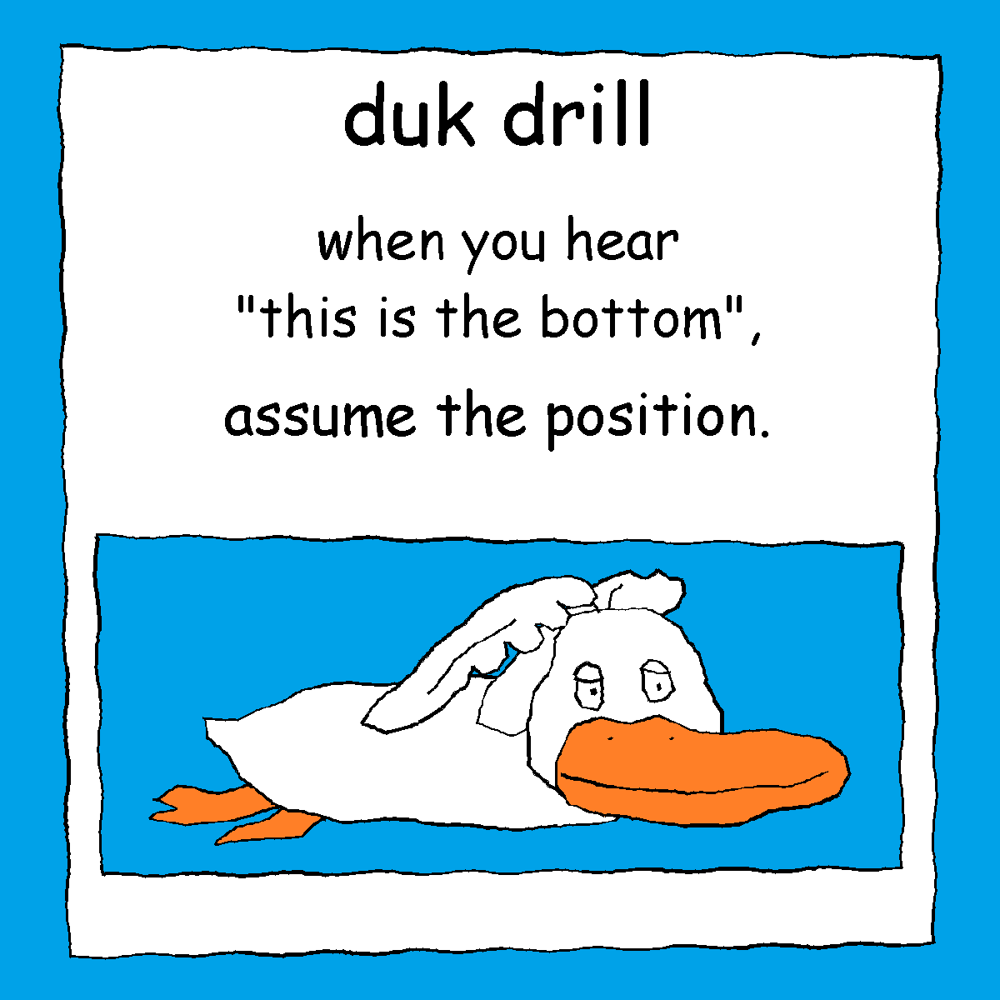
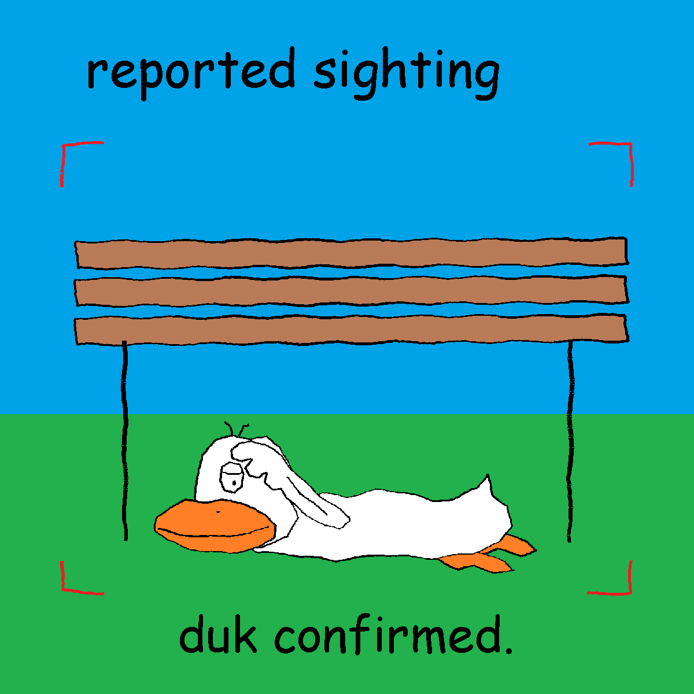

see it coming.
oh. that again.
membership: free and automatic
you're already a member.
there's nothing to sign up for.
01 / the creed
people keep asking for a line about the chart.
there isn't one. duk.
02 / safety card
please review before
your next bad day.
oh. that again.

lie flat, wings over your head, eyes open.
say nothing about it.
you don't need anything for this. do it as often as you need to.
do it somewhere safe, like a floor, a bed or a lawn you're allowed on. stay off stairs, roads and anything that moves.
if a real thing is actually coming at you, move. the position is for candles, mondays and group chats.

03 / initiation
three steps.
anyone can do them.

set the duk as your pfp.
then nobody can tell us apart, which is the idea.
find another duk and say duk.
they say it back. that's our gm.
had a bad day? post the position.
use the art, or do it yourself somewhere safe.
you're in now. you can stop reading here if you want.
04 / step one, in detail
everyone uses
the same face.
set a duk as your pfp: flat blue background, white duck, orange bill, nothing behind the eyes. if you see that face on your timeline, it's one of us.
the list. an x list of duks, kept by @justdukfun. follow it to find the others.
follow the list ↗05 / honor system
nobody checks
these.
make a membership card. nobody checks it, so put whatever you want on it.
06 / every day, same time
the only meeting.
it's ten minutes.
every day at
21:00 utccheck what that is where you live.
duk hour: 21:00 utc
minutes of the last meeting: duk.
07 / community greeting rules
short list.
please follow it.
| they say | you say |
|---|---|
| gm | duk. |
| wagmi | duk. |
| “this is the bottom” | assume the position. |
| “i got liquidated” | unduckable. get up. |
| “how are you” | still here. |
| “what's the plan” | just duk. |
| “quick question” | noted. duk. |
| a three-paragraph thread | read nothing. duk. |
it's the same face every time. get the stickers →
loading the stickers.
08 / the challenge
it's planking
for ducks.
lie face down somewhere funny. wings over head if you have them. get someone to take the picture. post it as duking with #duking or just duk.
@justdukfun reposts the best ones on sundays, with credit.
post your duking ↗loading examples.
09 / the calendar
the calendar has
three entries.
monday

practice the position before the week starts going wrong. post your drill.
sunday

@justdukfun reposts the week's best #duking posts, with credit.
every day
21:00
utc
ten minutes of saying duk. details ↑
10 / words
there's no
whitepaper.
11 / things that come at you
the list
keeps growing.
they said this was the bottom. duk.

due on the first. duk.

nothing left to liquidate. duk.

no. down.

too early to stand.

noted. duk.

already on the floor. nice try.
loading memes.
end of orientation